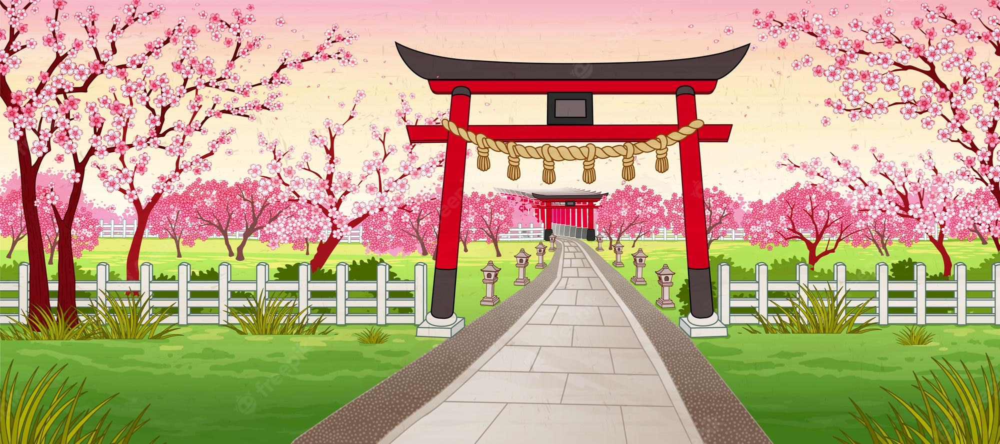

Many different gamemodes. Japanese maps for the game and other!
Beta test soon! Fell free to join us!
- Updated Launcher to support pictures.
- Updated Game's widgets.
- Fixed a lot of bugs.
- Updated Game's test map. (Fixed colliders).
- Fixed Settings menu.
- Second test for testers.
- Created Installer and Uninstaller for Launcher
- Rewrited Launcher Updater.
- Changed hosting for Game News site.
- Fixed bugs.
- Updated Main Launcher.
- Recreated Settings menu.
- Fixed bugs.
- Created Loading Screen menu.
- Created Settings menu.
- Updated Interface.
- Fixed a lot of bugs.
- Added game graphics settings.
- Updated game's GUI.
- Fixed some bugs.
- Added News function to launcher.
- Updated Launcher's design.
- Updated Launcher's / game icon.
- Created webpage for game news and updates information.
- Updated Launcher's design.
- Updated Launcher's button function.
- Updated Launcher's autoupdater design.
- Made Window for Launcher and Launcher's autoupdater NonResizable.
- Started working at custom button colour for Launcher.
- Created first Launcher.
- Created design of map for the game.
- Started working at Launcher's autoupdater.